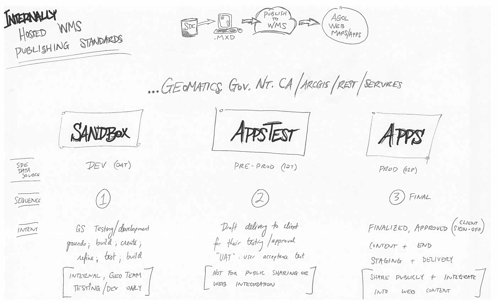

WMS library
Web Mapping Services (WMS) are the backbone of our web published geo resources. Keeping track of what's what and where content is published is ultra important.
Below is a crude rendition of current data workflows/migrations from DEV to EDIT SDE instances.

The above three "web tier" SDE instances are plugged into seperate ArcServer instances: Sandbox, Appstest, & Apps. These are our 3 web tiers and each has a particular use/purpose.
WMS Instances:
-
SANDBOX
INTENDED USE: Development and New Content
PLAY IN THE SANDBOX -
APPSTEST
INTENDED USE: User Acceptance Testing (UAT)
POKE THE TEST BOX -
APPS
INTENDED USE: Production Server
ENTER THE DRAGON
Note: Understanding the flow of data, in conjunction with the flow of web migration, is crucial to success.
Below here is shown another crude, messy diagram showing such flows and intended uses.
Study well young grasshoppers and geo-spatial dominance and success can be yours.

What are our Neighbours doing???
| CREW | CONTENT | LINK |
|---|---|---|
| Yukon | WMS & Custom Basemaps | HERE |
| Yukon | Data Portal | HERE |
| Yukon | Image Server | HERE |
| City of Yellowknife | WMS | HERE |
| City of Yellowknife | Data Portal | HERE |
| Alberta | GeoDiscover (Maps, Apps, Data) | HERE |
| BC | BC's SDI | HERE |